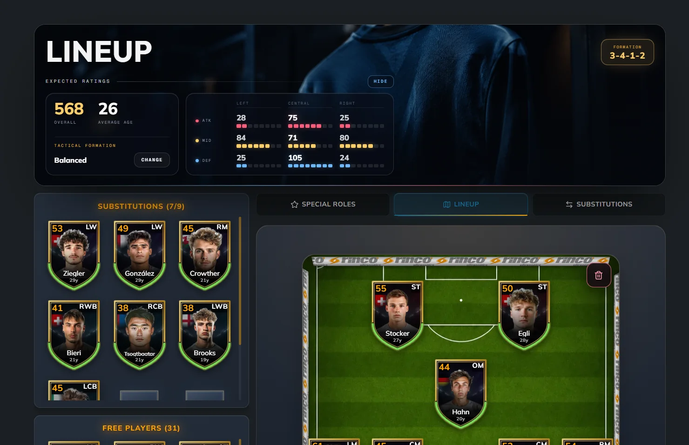
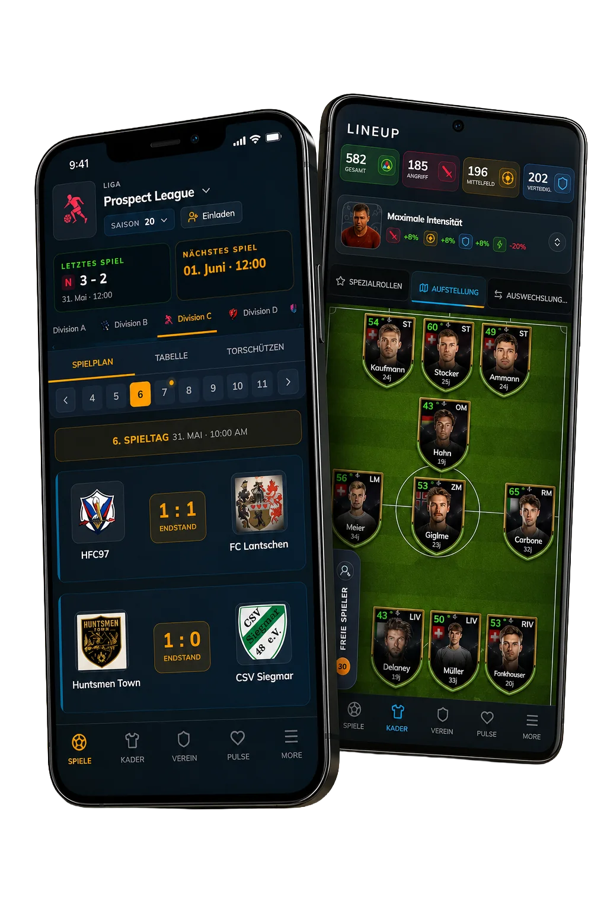

PULSE Game Engineering
I built and operated a live football management game across web and mobile. I owned its user experience, data models, scheduled simulations, APIs, releases, analytics, and production support.
- React
- Next.js
- TypeScript
- Node.js
- REST APIs
- PocketBase
- Capacitor
- Real time updates
- Docker
- AWS S3
- Linux
- Product analytics
- A/B testing
- Agentic workflows
Executive Summary
I took PULSE from the first concept to a live game with a persistent football world, scheduled fixtures and simulations, real time frontend updates, and a Capacitor mobile app.
I owned the full path from game and schema decisions through frontend and backend implementation, testing, release, monitoring, defect investigation, data recovery, and user support. The production system processed approximately 28,000 application events triggered by users each day.
Game and Pixel Level UX
The game covered scheduling, leagues, cups, tactics, player development, reports, transfers, and support tooling. I designed the responsive behavior and iterated individual screens using game instrumentation, funnel analysis, A/B tests, community feedback, and direct observation of user friction.

Persistent club state, lineup decisions, navigation, and operational prompts.

The same live club across mobile fixtures, results, and lineup decisions.
Systems + Production Operations
I designed the application database, schemas, backend logic, Node.js REST APIs, admin tooling, and real time workflows backed by PocketBase. Scheduled jobs advanced fixtures and simulations, then delivered the resulting state changes to the frontend in real time. I shipped the mobile game with Capacitor and owned Docker delivery, Linux operations, DigitalOcean, AWS S3, monitoring, releases, investigation, and recovery.
Frontend
Web + mobile game
Next.js, React, TypeScript, responsive web workflows, a Capacitor mobile build, and product instrumentation.
Backend
State + simulation
Data models, Node.js APIs, scheduled fixtures and match simulations, plus real time state updates to the frontend.
Operations
Own the outcome
Daily releases, monitoring, defect investigation, data recovery, and production support.
Agentic Game and Engineering Workflows
I used agents across game ideation, specification, implementation, validation, and bug triage. I also built production agents that interacted directly with PULSE players inside the game.
Product definition
Turned game ideas into bounded specifications and implementation steps before changing the live product.
Implementation and tests
Used coding agents with specification, test, and review gates across frontend and backend work.
Bug triage
Used agents to structure defect investigation, debugging, validation, and follow-up work.
Player interaction
Built production agent surfaces that interacted directly with PULSE players as part of the game experience.
Outcome + Business Impact
The project demonstrates current and practical full stack engineering: a real game, real users, production constraints, measurable UX decisions, internal automation, and direct responsibility when the system failed.
Approximate application events triggered by users each day.
Increase in new users completing their first lineup after onboarding changes.